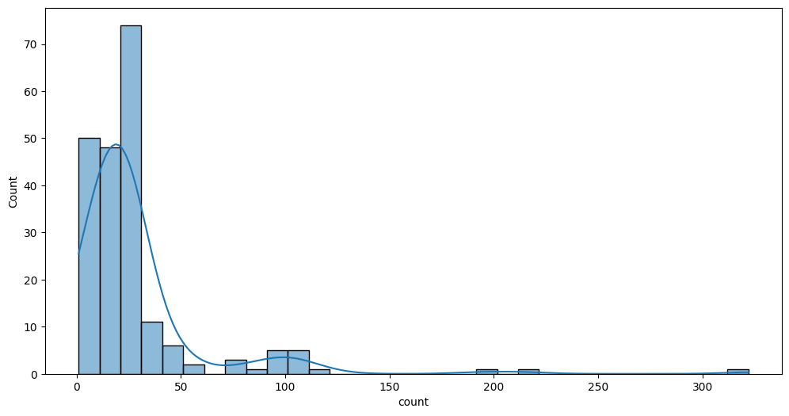

SMARTER 50K#
This is an attempt to test tstree with different 50K data. A single example of
50 samples is described in notebooks/03-smarter_database.ipynb. Here we want
to select different breeds from 50K and test how the tstree will results
import numpy as np
import pandas as pd
import seaborn as sns
import matplotlib.pyplot as plt
from tskitetude import get_data_dir
from tskitetude.smarterapi import SheepEndpoint
Collect all sheep samples from 50K:
sheep_api = SheepEndpoint()
data = sheep_api.get_samples(chip_name="IlluminaOvineSNP50")
page = page = data["page"]
sheep = pd.DataFrame(data["items"])
while data["next"] is not None:
data = sheep_api.get_samples(page=page+1, _type="background")
df_page = pd.DataFrame(data["items"])
page = data["page"]
sheep = pd.concat([sheep, df_page], ignore_index=True)
sheep.info()
<class 'pandas.core.frame.DataFrame'>
RangeIndex: 5892 entries, 0 to 5891
Data columns (total 17 columns):
# Column Non-Null Count Dtype
--- ------ -------------- -----
0 _id 5892 non-null object
1 breed 5892 non-null object
2 breed_code 5892 non-null object
3 chip_name 5892 non-null object
4 country 5892 non-null object
5 dataset_id 5892 non-null object
6 locations 4849 non-null object
7 metadata 4878 non-null object
8 original_id 5892 non-null object
9 phenotype 577 non-null object
10 smarter_id 5892 non-null object
11 species 5892 non-null object
12 type 5892 non-null object
13 father_id 58 non-null object
14 mother_id 58 non-null object
15 sex 501 non-null float64
16 alias 156 non-null object
dtypes: float64(1), object(16)
memory usage: 782.7+ KB
Count how many samples I have by breed:
sheep_count = sheep.groupby('breed_code').size().reset_index(name='count')
sheep_count
| breed_code | count | |
|---|---|---|
| 0 | AAW | 24 |
| 1 | ADP | 21 |
| 2 | AFS | 37 |
| 3 | AIM | 88 |
| 4 | ALP | 24 |
| ... | ... | ... |
| 204 | WIL | 23 |
| 205 | WMH | 24 |
| 206 | XIS | 24 |
| 207 | ZEL | 24 |
| 208 | ZUJ | 5 |
209 rows × 2 columns
Plot count distribution:
fig, ax = plt.subplots(figsize=(12, 6))
sns.histplot(data=sheep_count, x='count', kde=True, binwidth=10, ax=ax)
plt.show()

The majority of the breed have <= 50 samples. Try to focus to the higher column, for example where counts > 20 and <=30:
selected = sheep_count[(sheep_count['count'] <= 30) & (sheep_count['count'] > 20)]
print(f"There are {selected['count'].shape[0]} breeds having samples between 20 and 30")
There are 84 breeds having samples between 20 and 30
Now extract randomly a certain number of breeds and make a CSV file that I can use
to extract genotypes using nf-treeseq pipeline:
np.random.seed(42)
repeats = 5
breed_size = [1, 2, 5, 10, 15, 20]
for i in breed_size:
for j in range(repeats):
sample = selected['breed_code'].sample(n=i, replace=False)
filename = f"{i}_breeds-{j}-50K.csv"
sample_df = sheep[sheep['breed_code'].isin(sample)]
sample_df[["breed_code", "smarter_id"]].to_csv(get_data_dir() / filename, index=False, header=False, sep="\t")